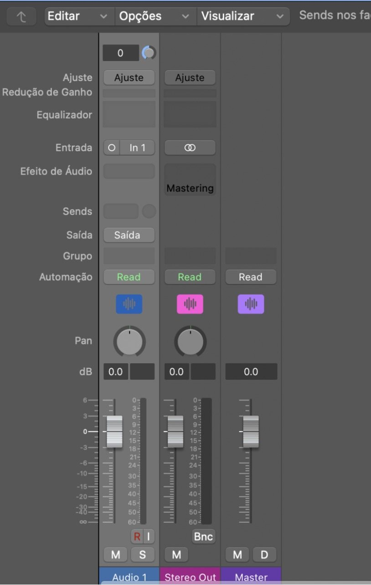
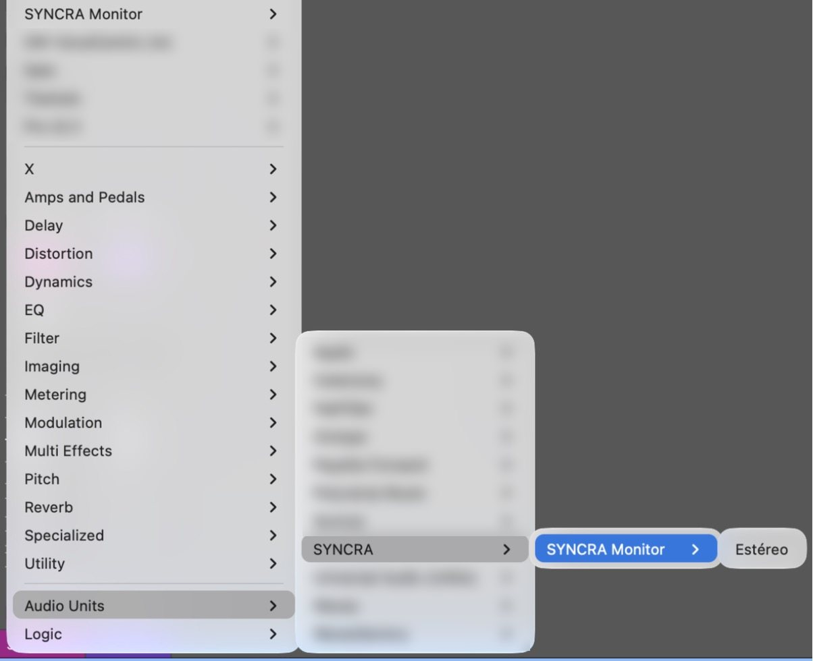
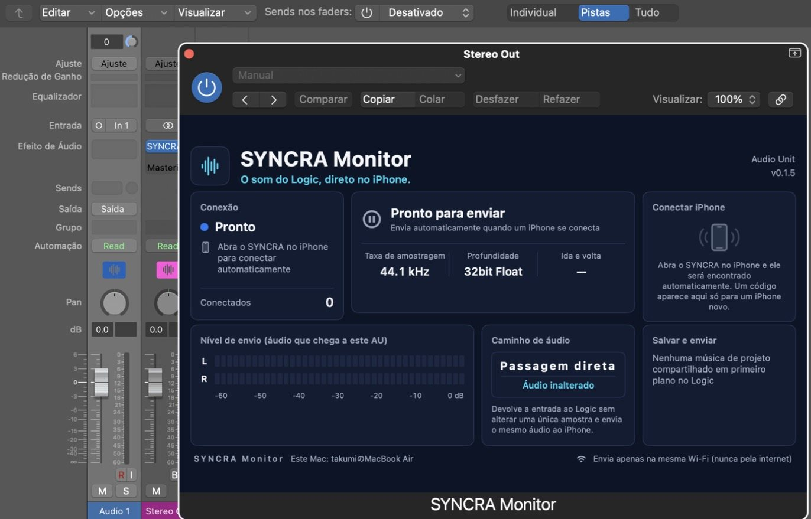

Inserir o SYNCRA Monitor no Logic
Como inserir (3 etapas)
Abra o Stereo Out no mixer
No Logic, pressione X para abrir o mixer. (1) Encontre o canal “Stereo Out” e (2) o slot vazio de Audio FX.
- O canal Stereo Out
- O slot de Audio FX (clique aqui)

12Clique no slot e escolha no menu
Clique no slot de Audio FX e escolha (1) Audio Units → (2) SYNCRA → (3) SYNCRA Monitor → (4) Estéreo. A partir da segunda vez, o SYNCRA Monitor aparece no topo do menu, em “Itens recentes”.
- Audio Units
- SYNCRA
- SYNCRA Monitor
- Estéreo

1234Ao inserir, a janela do SYNCRA Monitor se abre
(1) “SYNCRA…” aparece nos Audio FX do Stereo Out e (2) a janela “SYNCRA Monitor” se abre. (3) Quando aparecer “Aguardando”, está pronto.
- O SYNCRA está inserido em Audio FX
- A janela do SYNCRA Monitor (Stereo Out)
- “Aguardando” = pronto

123- Insira o SYNCRA Monitor nos Audio FX da saída Stereo Out do Logic Pro.
- Quando aparecer “Aguardando”, está pronto. Abra o SYNCRA no iPhone ou iPad: ele se conecta sozinho na mesma rede Wi-Fi e o áudio do Logic chega em tempo real (só na primeira vez com cada iPhone aparece um número aqui).
- O caminho de áudio é “Passagem direta (som inalterado)”: a entrada volta ao Logic sem mudar uma única amostra, e o mesmo áudio é enviado ao iPhone. A taxa de amostragem e a profundidade de bits (32 bits float) são exibidas.
O áudio só é enviado dentro da mesma rede Wi-Fi, nunca pela internet.
Partes da tela
- Status da conexãoStatus (Aguardando, Conectado…) e quantos iPhones e iPads estão conectados.
- EnvioSe o áudio está sendo enviado ao iPhone ou iPad (Enviando / Aguardando). Começa sozinho ao conectar.
- Formato de áudioTaxa de amostragem, profundidade de bits (32 bits float) e ida e volta da rede.
- Conectar ao iPhoneSó com um iPhone novo aparece aqui e no iPhone o mesmo número de 6 dígitos. Se for igual, toque em “Corresponde”.
- Nível de envioMedidores esquerdo e direito do áudio que chega a este AU.
- Caminho de áudioPassagem direta: a entrada volta ao Logic sem mudar uma única amostra.
- Salvar e enviarTambém dá para salvar e enviar daqui as alterações da música do projeto compartilhado em primeiro plano.
- Só na mesma rede Wi-FiO áudio só é enviado dentro da mesma rede Wi-Fi, nunca pela internet.
Mais detalhes (guia do app)
Preparar o Mac
- Deixe o SYNCRA aberto.
- No channel strip do Stereo Out do Logic, insira o plug-in “SYNCRA Monitor” (no espaço de Audio FX, escolha “SYNCRA” dentro de “Audio Units”).
- Se o macOS pedir permissão para “Rede Local”, permita (nada é enviado à internet).
O SYNCRA Monitor não altera o áudio de forma alguma. Ele devolve ao Logic, sem mudanças, o áudio que recebe.
Conectar pelo iPhone
- No SYNCRA do iPhone, abra a aba “Monitor”. O app encontra e conecta automaticamente o Mac no mesmo Wi-Fi.
- Somente no primeiro Mac, o mesmo número de 6 dígitos aparece no iPhone e na tela do SYNCRA Monitor no Mac. Se forem iguais, clique em “Coincide” na tela do Mac. Se forem diferentes, clique em “Não coincide”.
- A partir da segunda vez, a conexão é automática, sem número.
O que você pode conferir na tela do Mac
- “Status da conexão”: estados como em espera ou conectando.
- “Status do envio”: se o áudio está sendo enviado ao iPhone.
- “Conexão com o iPhone”: o iPhone conectado e o botão “Desconectar”.
- “Nível de envio”: os medidores esquerdo e direito do áudio recebido.
Para reproduzir, parar, mover, repetir em loop e exportar a forma de onda completa a partir do iPhone, o SYNCRA do Mac precisa estar aberto e a Acessibilidade precisa estar permitida. Enquanto a forma de onda é exportada, o Logic vem para a frente e é controlado. Tenha cuidado se estiver fazendo outra coisa no Mac.